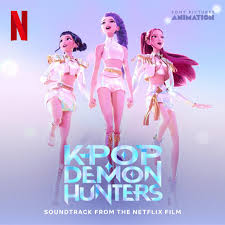
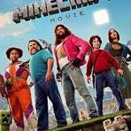
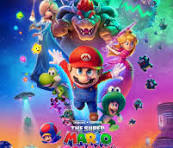

My Favorite Movies
KPop Demon Hunters

KPop Demon Hunters is a 2025 American animated musical urban fantasy film[9][10] co-written and directed by Maggie Kang
and Chris Appelhans. It was produced by Sony Pictures Animation for Netflix and stars the voices of Arden Cho, Ahn
Hyo-seop, May Hong, Ji-young Yoo, Yunjin Kim, Daniel Dae Kim, Ken Jeong, and Lee Byung-hun. The story follows a K-pop
girl group, Huntrix,[a] who lead double lives as demon hunters. They face off against a rival boy band, the Saja Boys,
whose members are secretly demons.
KPop Demon Hunters originated from Kang's desire to create a story inspired by her Korean heritage, drawing on elements
of mythology, demonology, and K-pop to craft a visually distinct and culturally rooted film. It had entered production
by March 2021, with the full creative team attached. The visuals were influenced by concert lighting, editorial
photography, music videos, and anime and Korean dramas. The soundtrack features original songs by several musicians and
a score by Marcelo Zarvos.
K pop demon hunters
Minecraft movie

A Minecraft Movie is a 2025 fantasy adventure comedy film based on the 2011 video game Minecraft developed and published
by Mojang Studios. Directed by Jared Hess, from a screenplay by Chris Bowman, Hubbel Palmer, Neil Widener, Gavin James,
and Chris Galletta, based on a story by Allison Schroeder, Bowman, and Palmer, the film stars Jason Momoa (who also
serves as one of the producers), Jack Black, Emma Myers, Danielle Brooks, Sebastian Hansen, and Jennifer Coolidge. It
follows four misfits from the town of Chuglass, Idaho, who are pulled through a portal into a cubic world, and must
embark on a quest back to the real world with the help of a "crafter" named Steve.
Plans for a Minecraft film adaptation originated in 2014, when game creator Markus Persson revealed that Mojang Studios
was in talks with Warner Bros. to develop the project. Throughout development, the film shifted between several
directors, producers, and story drafts. By 2022, Legendary Entertainment became involved, and Hess was hired as director
with Momoa in talks to star. Further casting took place from May 2023 to January 2024. Principal photography began later
that month in New Zealand and concluded in April 2024. Mark Mothersbaugh composed the score, and Sony Pictures
Imageworks, Wētā FX, and Digital Domain provided the film's visual effects. The Minecraft Movie is scheduled to be released in the United States on April 4, 2025, by Warner Bros. Pictures.
Minecraft Movie
Super Mario movie

The Super Mario Bros. Movie is a 2023 animated adventure comedy film based on the Mario video game franchise by Nintendo.
Directed by Aaron Horvath and Michael Jelenic, from a screenplay by Matthew Fogel, and produced by Chris Meledandri
and Shigeru Miyamoto, the film features an ensemble voice cast including Chris Pratt as Mario, Anya Taylor-Joy as
Princess Peach, Charlie Day as Luigi, Jack Black as Bowser, Keegan-Michael Key as Toad, Seth Rogen as Donkey Kong,
Fred Armisen as Cranky Kong, Kevin Michael Richardson as Kamek, and Sebastian Maniscalco as Spike. The story follows
the Mario brothers as they attempt to rescue Princess Peach from Bowser's clutches and save the Mushroom Kingdom.
Plans for a Super Mario Bros. film adaptation date back to 1993 with the release of a live-action film. However, it
was met with negative reception and is considered a critical and commercial failure. In 2018, Illumination
Entertainment announced that they were developing an animated Super Mario film in partnership with Nintendo. The film
was directed by Horvath and Jelenic, with Fogel writing the screenplay. The voice cast was announced in September 2021,
with production taking place at Illumination's headquarters in Santa Monica, California. The Super Mario Bros. Movie was released in the United States on April 5, 2023, by Universal Pictures.
Super Mario Movie